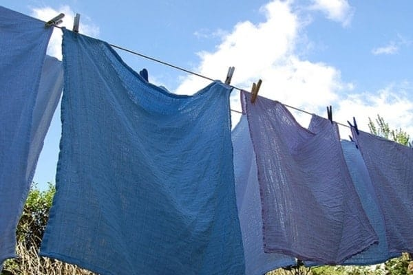
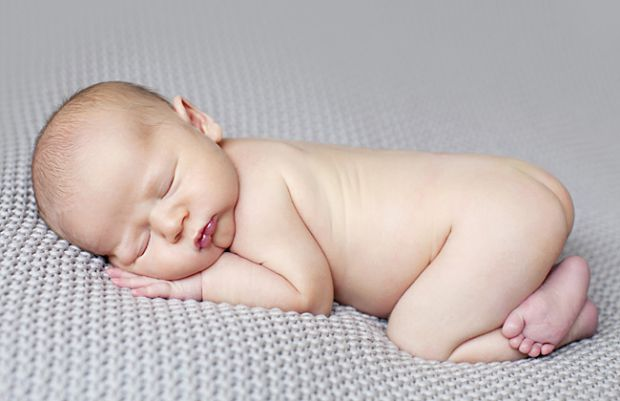
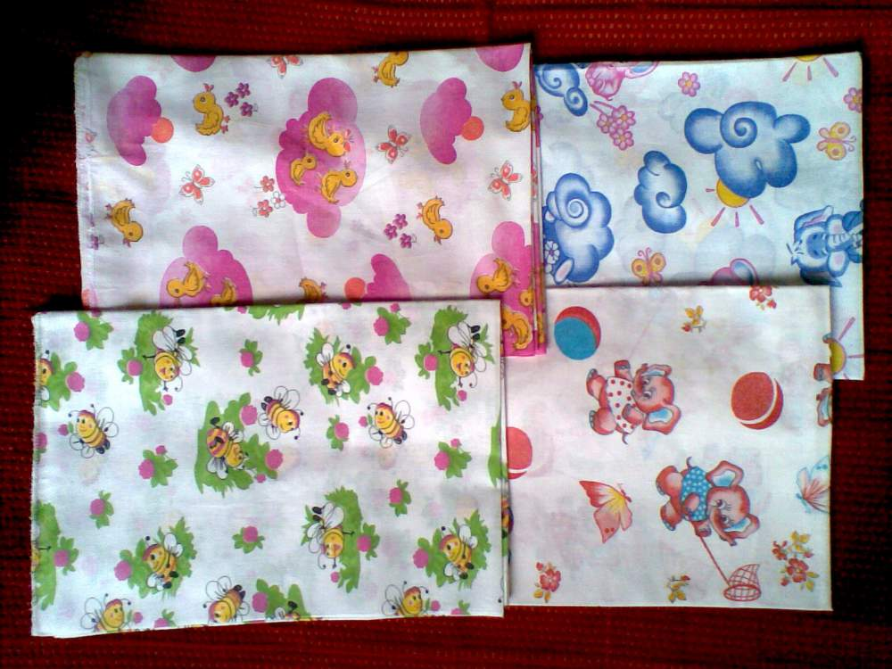
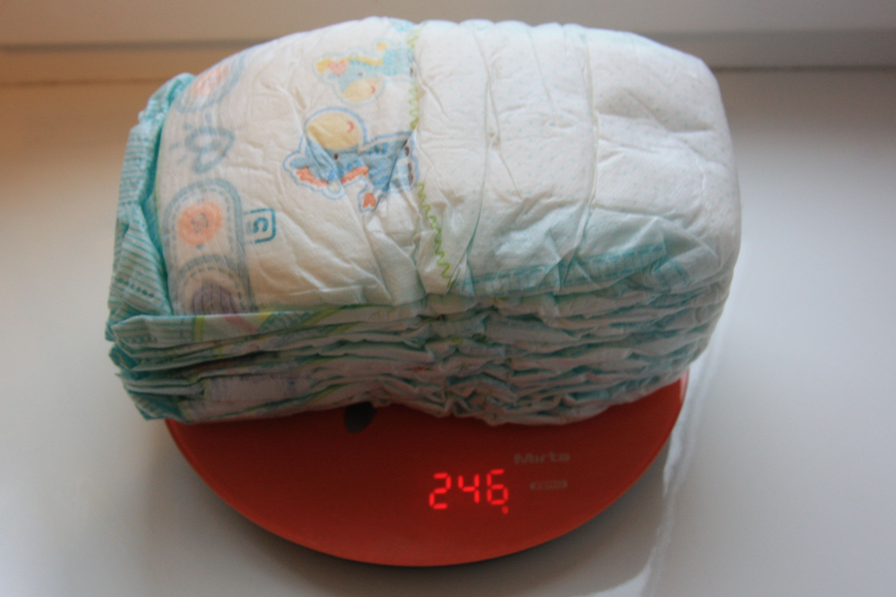
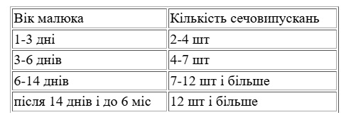
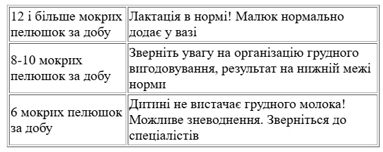

Тест мокрих пелюшок

Тест мокрих пелюшок (ТМП)- це спосіб з'ясувати, чи вистачає малюку грудного молока, шляхом підрахунку кількості сечовипускань за добу.
Коли ми використовуємо цей тест:
- При уявній нестачі молока ( про неї ви можете почитати тут)
- Якщо дитина набирає недостатньо ваги ( менше, ніж 500 г\місяць або менше, ніж 125г\тиждень)
- При відмові малюка від грудей (щоб визначити, чи нема зневоднення)
- Коли є потреба визначити обсяг і темп відміни догодовування у дитини на змішаному харчуванні під час переведення на виключно грудне вигодовування.

Для того, щоб провести цей тест, необхідно:
На добу відмовитися від одноразових підгузків. Наприклад, о 8:00 ранку понеділка ви знімете його з дитини, і тільки о 8:00 ранку вівторка - знову одягнете.
Важливо для точності результату, щоби в цю добу дитина отримувала лише грудне молоко без додаткового пиття (вода, чай від кольок, фенхель). Ми пам'ятаємо, що дитина на виключно грудному вигодовуванні не потребує допоювання іншими рідинами до введення прикорму (6 місяців).
Кількість сечовипускань потрібно записувати, щоб не помилитися в підрахунках. Для цього складіть табличку, до якої будете записувати результати, наприклад, по годинах:
Що маємо на увазі, кажучи “одна мокра пелюшка”? Наявність на пелюшці мокрої плями розміром не менше, ніж пляма від 30 мл вилитої рідини.

Як організувати процес?
Підготуйте на цю добу достатню кількість пелюшок, не менше 10-ти. Вони можуть бути виготовлені з будь-якої натуральної тканини: байкові, марлеві, ситцеві. Дитина може бути одягнута в багаторазовий підгузок зі вставленою пелюшкою, в марлевий підгузок або у звичайні трусики(залежно від температури в кімнаті). Влітку, у спеку, можна взагалі залишати малюка повністю роздягненим. Також у теплу пору року простіше організувати прогулянку: достатньо застелити візочок чи слінг одноразовою пелюшкою і взяти зі собою запас чистого одягу. Натомість у холодну пору варто скасувати прогулянку в день проведення тесту.
Вночі теж потрібно обійтися без підгузка. Не варто боятися - це зовсім не складно і, тим паче, це лише на одну ніч! Найкраще - заздалегідь, під час підготовки до сну, підготувати сухі пелюшки на зміну та покласти їх поруч зі спальним місцем, щоб вони були під рукою. Під дитину застелити одноразову пелюшку, щоб зберегти ліжко сухим. На хлопчиків краще одягти трусики, щоб “локалізувати” сечовипускання.
Втім, нічне продовження підрахунку мокрих пелюшок потрібне не завжди. Якщо упродовж світлового дня мама зафіксує вже достатню кількість сечовипускань, то тест можна припинити.
Якщо ж вам все-таки не вдається організувати процес з пелюшками, можна порахувати вагу використаних одноразових підгузків, хоч у цьому випадку результат тесту буде не зовсім точним. Потрібно зібрати всі використані підгузки в поліетиленовий пакет, попередньо знявши з них шар стільця. Важливо зберігати пакет з підгузками герметично закритим, щоб волога не випаровувалася.
Через 24 години потрібно зважити всі використані підгузки. Потім - зважити таку саму кількість чистих, нових підгузків та отриману різницю у вазі розділити на 30г ( умовну вагу одного «попісу»). Результатом і буде кількість мокрих пелюшок за добу. Наприклад, за день дитина використала 10 підгузків, які важать 450 г. 10 сухих підгузків важать 150г. Різниця: 300г. Ділимо на 30 і отримуємо 10 мокрих пелюшок.

Про що скажуть мокрі пелюшки?
Чи достатньо дитина отримує грудного молока, чи добре працюють нирки та сечовидільна система. Зверніть увагу на те, що протягом дня сеча немовляти повинна бути прозорою і безбарвною, тільки вранці вона може мати жовтуватий відтінок через те, що більш концентрована.
Інтерпретувати результати допоможе таблиця.
Норма за добу, від:

Результат тесту

Текст редагувала Юля Олех